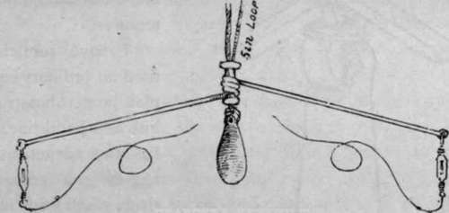
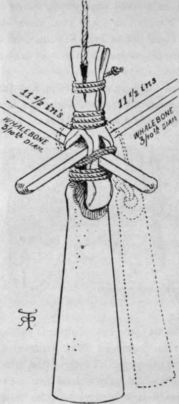
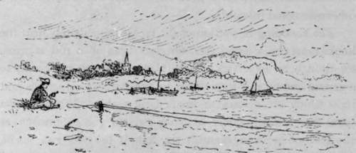

Sea Fishing From Small Boats. Part 12
Description
This section is from the book "Sea Fishing", by John Bickerdyke. Also available from Amazon: Sea Fishing.
Sea Fishing From Small Boats. Part 12
With regard to hand lines, the most ancient form, and that still most commonly used, consists of a lead and a spreader, from the two ends of which dangle snoodings with hooks. There are several varieties of this tackle ; the best of them is perhaps the Kentish rig, of which an improved form, invented by Mr. Hearder, is illustrated on this page. A loop of line, which the maker would be well advised to make at least five inches in length, holds the lead. On it is a piece of brass piping with rolled edges, and on the piping is the twist of wire the ends of which are prolonged and form the spreaders. By pushing up the piping (which saves the line from friction) the lead is easily unlooped and a heavier or lighter one put in its place. To each end of the spreader should be fixed a small swivel, and to this the snood, which may be about a yard or less in length, and when possible of gut, should be attached.
Hearder's Kentish Rig.
The construction of a true Kentish rig is shown in the second illustration. There the spreaders are of whalebone, and they and the lead are held together by a strip of leather. Additional leads, indi cated by the dotted lines, are added when required.
I have sometimes used an ordinary eight-plait tanned hemp reel line as a hand line. It has the advantage of requiring a comparatively small lead, owing to its fineness. But these fine lines cut the hands, and to fish without a rod with any degree of comfort something stouter is required. A hand line should be cable-laid, of hair, cotton, hemp, or flax, and dressed, to prevent kinking, and there should always be a swivel between the end of the line and the spreader. The cotton lines are in great favour ; but best of all, though expensive, is a hair line—best because of its elasticity. The comparative sizes of hand and other lines are illustrated in the following chapter.
Kentish Rig From Deal.
The lighter the lead the better, so long as it will keep the tackle near the bottom. As a general rule, immediately a bite is felt, the fisherman should haul in the line, hand over hand, letting it run over the gunwale of the boat, which helps to play the fish, and scrapes off a good deal of the water which would otherwise come inboard.
The snooding or portion of the tackle immediately next the hook must be a good deal stronger than if a rod is used, for though an expert is able to play a fish with his hands to a certain extent, it is impossible to prevent sudden strains and jerks which are certain to break light tackle. When using a hand line I much prefer a strong twisted gut paternoster at the end of it to a Kentish rig, but if the fish run small, say 3 lbs. or less, the hook links should be of single gut. I have seen both Kentish rig and paternoster worked on hand lines from the same boat. More fish were killed on the paternoster than on the professional gear.
On the whole, I am inclined to think that to knock about in a small boat, with a skilful boatman and a good supply of the right bait, yields as much amusement as any to be obtained from sea fishing. The sport is far more certain than that obtained from pierheads or rocks, and it is a great convenience to be able to carry all one's tackle and sundry impedimenta about without difficulty.
In a sailing vessel we are entirely dependent on the wind, though, on the other hand, there is the advantage of fishing more distant grounds which it would not be safe to venture upon in the small open boat. There is, of course, that poetry of motion which is not thoroughly appreciated by the great majority ; but, as I have pointed out, there are many inlets of the sea, and large estuaries, harbours and the like, as calm as need be, and these may be commended to ' bad sailors,' to use a term which is well understood, but maybe lacks scientific accuracy.

Continue to:
- prev: Sea Fishing From Small Boats. Part 11
- Table of Contents
- next: Chapter VIII. Sea Fishing From Yachts And Large Fishing Boats
Tags
fishing, hooks, bait, fishermen, spanish mackerel, mackerel fishing